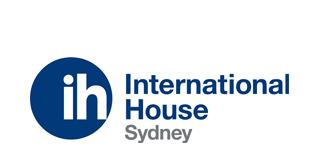
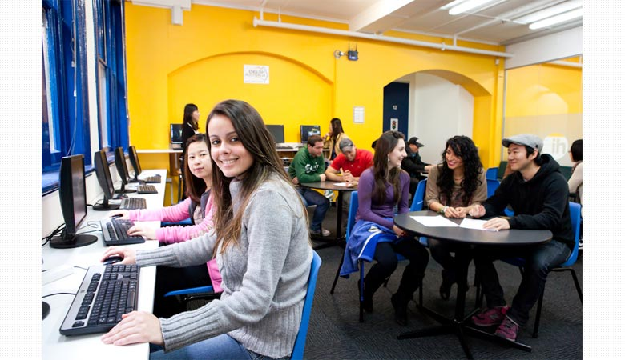
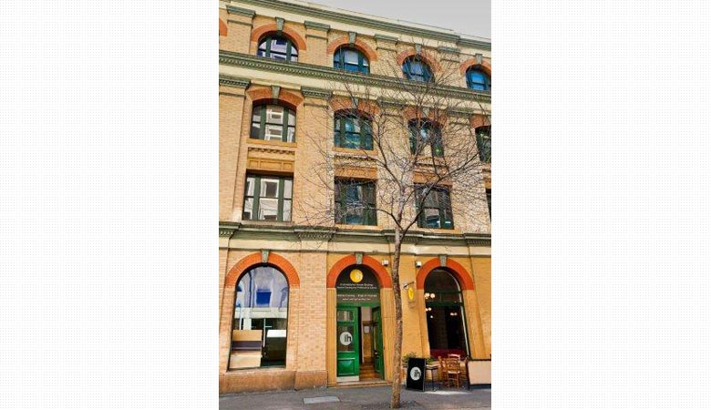
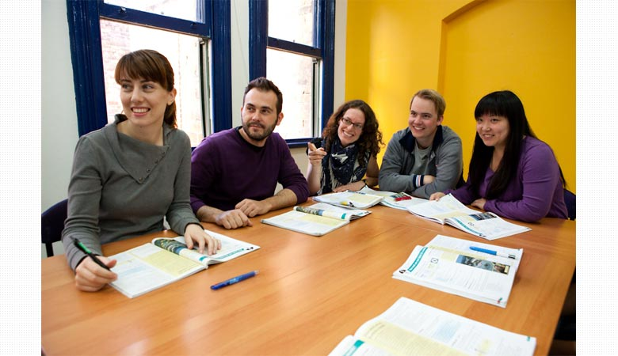
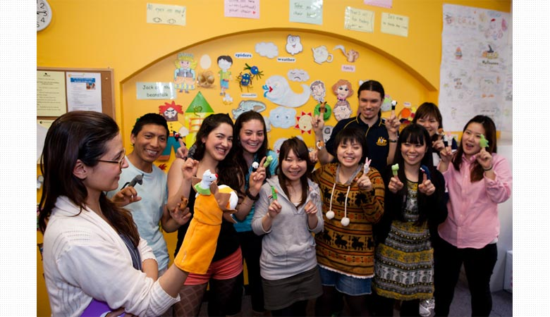
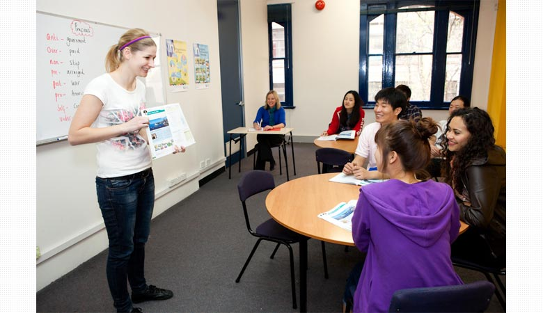
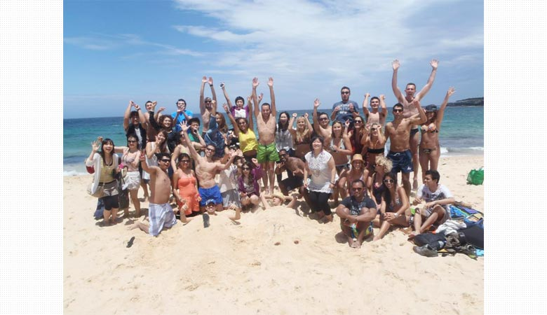

 【オーストラリア/シドニー】
英語の先生になれるJ-shine の資格をとるならココ！世界から注目される専門校
IH Sydney / アイエイチシドニーInternational House Sydney(インターナショナルハウス シドニー校)


International House Sydney(インターナショナルハウス シドニー校)
英語の先生になれるJ-shine の資格をとるならココ！世界から注目される専門校。
英語の先生になれるJ-shine の資格をとるならココ！世界から注目される専門校。

ロケーション
徒歩圏内に電車やバスの駅があるので通学にも困りません。
周辺にはデパートやカフェもあり、住みやすい環境です。
徒歩圏内に電車やバスの駅があるので通学にも困りません。
周辺にはデパートやカフェもあり、住みやすい環境です。

実績ある学校だから安心
International House は1953年設立以来の実績と50カ国に及ぶ世界最大のネットワークを誇る語学学校です。
International House は1953年設立以来の実績と50カ国に及ぶ世界最大のネットワークを誇る語学学校です。

政府認可校でしっかり勉強
ケンブリッジ大学、J-Shine、NEAS( オーストラリア国家英語教育認定)など様々な認可を受けている学校です。
ケンブリッジ大学、J-Shine、NEAS( オーストラリア国家英語教育認定)など様々な認可を受けている学校です。

豊富な資格専門コース
J-shine やTESOL など様々な資格コースがあり、質の高い英語指導法を身につけることが出来ます。
J-shine やTESOL など様々な資格コースがあり、質の高い英語指導法を身につけることが出来ます。

コミュニケーション主体の授業で英語が伸びる
授業はコミュニケーションを重要視し、生徒を中心に進行されます。
これにより生徒の主体的な参加を促す指導法を実施しています。
授業はコミュニケーションを重要視し、生徒を中心に進行されます。
これにより生徒の主体的な参加を促す指導法を実施しています。

国籍バランスの良さを実感
ヨーロッパ圏からの生徒が多く、日本人が少ない環境です。
ヨーロッパ圏からの生徒が多く、日本人が少ない環境です。